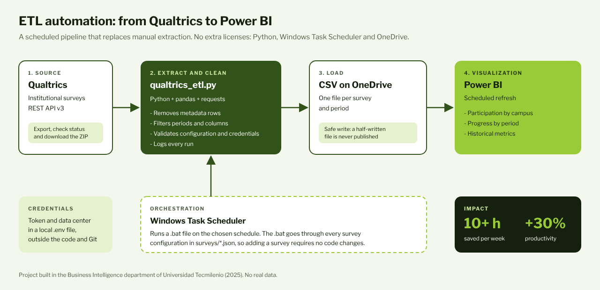
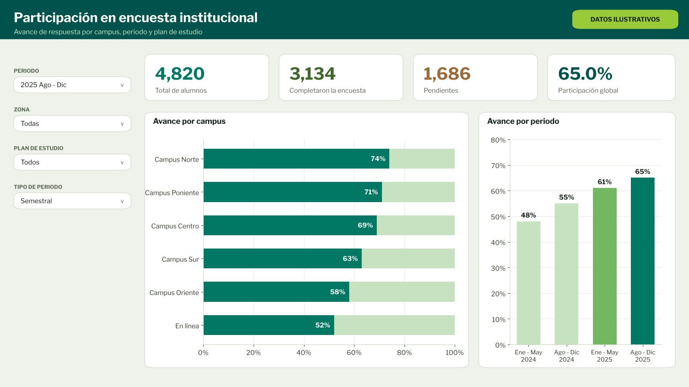
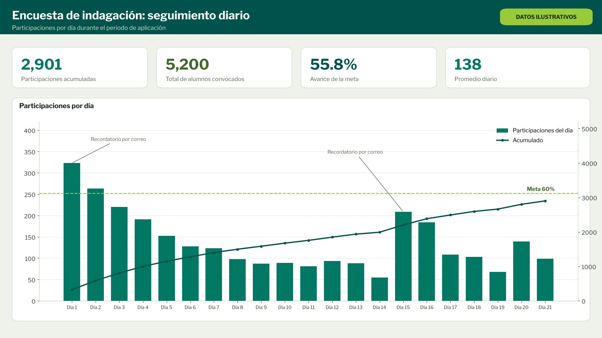
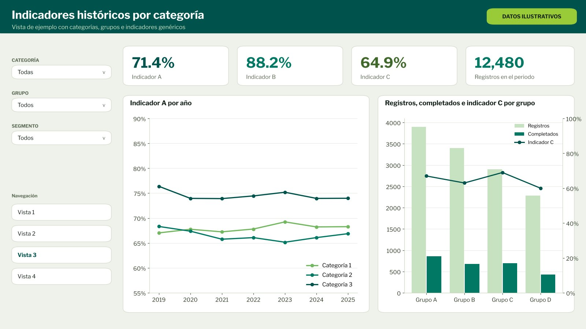

Business Intelligence Tecmilenio
Automatización ETL y dashboards
Un proceso en Python que extrae las encuestas institucionales de Qualtrics, las limpia y las deja listas para Power BI, sin descargas manuales ni costo de licencias.
- Rol
- Ingeniero de datos y desarrollador
- Periodo
- Ago - Dic 2025
- Área
- Business Intelligence
- Stack
- Python, Qualtrics API, Power BI

Contexto
El área necesitaba agilizar la extracción y el análisis de las encuestas institucionales. Las respuestas se descargaban a mano desde Qualtrics, se limpiaban en hojas de cálculo y se copiaban a la carpeta que alimentaba los tableros.
- Más de 10 horas a la semana dedicadas a extraer y limpiar datos.
- Varias versiones de un mismo archivo, sin un estándar que garantizara la integridad de la información.
- Tableros que se actualizaban tarde porque dependían de una descarga manual.
Qué construí
- Extracción por API: el script usa la exportación asíncrona de Qualtrics (iniciar, consultar estado y descargar el ZIP), con tiempos de espera y mensajes de error claros.
- Limpieza: quita las filas de metadatos de Qualtrics, filtra por periodo y conserva solo las columnas que usa cada tablero.
- Carga segura: genera un CSV por encuesta en OneDrive. Si algo falla, el archivo anterior no se toca, así que Power BI nunca lee datos a medias.
- Ejecución automática: el Programador de tareas de Windows corre un
.batque procesa cada encuesta configurada en un JSON. Agregar una encuesta no requiere modificar el código. - Tableros en Power BI: creé los tableros de participación e indagación, y rediseñé un tablero de indicadores históricos para el nuevo sitio institucional.
Resultado
+10 h
ahorradas cada semana en extracción y limpieza de encuestas, y un aumento de 30% en la productividad del área en sus reportes. Todo con herramientas que ya existían en la institución, sin pagar licencias nuevas.
Tableros
Réplicas de los tableros con el diseño original. Para proteger la información de la institución, todos los datos, nombres, categorías y cifras son ficticios.



Siguientes pasos
- Una interfaz para que personas sin conocimientos de programación configuren y ejecuten extracciones.
- Migrar los repositorios de encuestas a un Data Warehouse con flujos en la nube, como fuente única de la verdad.
Recursos
El repositorio incluye el script, la configuración por encuesta, pruebas con una API simulada y la guía para programar la ejecución. Se publicó con autorización y sin datos de la institución.